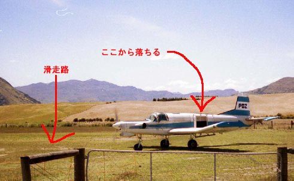

|
ニュージーランド ３ | |
 |
年も明けて２日目。今日も元気にアクティビティ！！
夏真っ盛り（のはず）のＮＺで、ラフティングを決行！ 天気が悪いせいか少し肌寒い。
資格のない素人が挑戦できる、最高ランク４が存在するショットリバーでの挑戦。なぜか、すでに濡れているウエットスーツに身を包み、バスで山奥へ。オーストラリア人と一緒にいざ出発！！
はじめに、号令と共に一緒に漕ぐ訓練を行う。オールオン！で前に漕ぐ。日本語での説明もあり（？）「マエ、コイデー！」とか、「ウシロー！」 「ミギウシロー！」 「ガンガン コイデー！！」 まさに、チームとなってボートを操るわけです。連携が悪ければ、転覆することも有ります。
コメント：シュガー
ラフティングを行うが私の一番の目的。夏だと言うのに川の水は冷たいね。色々講習をしたけど３０％分は理解？した。内容は…もー水遊びだなこれは。
落差の有る滝は２個あるけどもっとほしかった。多分機会があったらもっとやりたい。 なんせ＄９９だからね。
コメント：キッカー
おもしろかったけど、とにかく寒かった・・・夏なのに。 寒がりの私にはそれだけだった。 |
さて、正月も３日目。全然正月って気分じゃ無かったが（実際忘れていた）今日は天気が良く、スカイダイビングがやれるとのこと。待っていたかいが有りました。
迎えのワゴンに乗って、向かうはクイーンズタウン空港。かと思いきや、通り過ぎて農場まで。どうしたのかな？と思っていたら、片隅に小型飛行機が・・・・・ なんてダイナミック！！滑走路なんて、平らならＯＫ！ って感じの所。
一回に３人しか乗れないので、我々は別々に乗ることになった。まず一番最初に私が呼ばれた。私は初めてなので、緊張していたが、なんせ、これがやりたくてＮＺに来たようなモノ。
タンデムで飛ぶのだが、私のパートナーはエディという、共産圏から来たようなクリンスト・イーストウッドみたいなおじさん。経験２５年というベテラン。（軍隊上がりか？）
飛行服とハーネスを付け、簡単な説明の後、狭い飛行機に膝を抱えて乗り込み離陸。もともと荷物室のような畿内の横に、四角く切り取った出口が、ポッカリ口を開けていてアクリル板の窓が付いている。そこから、近くの山々や、クイーンズタウンが見え、高度９０００フィートまで上昇！。
窓を開けると、雪を頂いた山々が下に見え、真下の湖が陽光を反射してキラキラヒカルのが、小さく小さく見える。風がビュービューと音を立てている。エディが[GO!」とかいいながら、私共々飛び出す。風を切る音がビュオーと耳をかすめ、自由落下へ。地面がゆっくりと近づいてくる。おもしろくて自然に笑いがこみ上げてきた。
パラセールが開く瞬間、ハーネスがギュッと足に食い込む。 |  |
 |
エディが、パラセールの操縦用のひもを、持たせてくれた。片方を思いっきり下にひけ。と、言ってくる。左を思いっきり下に引くと、ぐるぐる回転して急行かする。私の手をエディが押さえているため、回転は止まらない。それでも、サイコーに楽しい！！！
コメント：キッカー
２回目の私は早く飛行機から飛び降りたかった。 フリーフォール中の適度な緊張感と風圧、遙か下に見える草原・・・これは本当の自由。 そのあとのパラグライダーも、もち楽しめます。
余裕があったら是非、「プリーズ モアー クレイジー」 とか「アナザー テクニック」とインストラクターに言ってみよう。ぐるぐるやってくれるよ。
（私は頼まなくても、やってくれた。エディ〜〜）
コメント：シュガー
スカイダイビンクを再び行った。前回はかなりこたえたが、今回はGOODになった。フリーホール時に遊ぶ余裕があった（唇が膨らむのが楽しかった）。９０００ｆｅｅｔはちょっと物足りないね（調べたら前回９５００ｆｅｅｔだった）。
次回は、１２０００ｆｅｅｔでしょう！！
|
ＮＺも今日が最終日。私は買い物のため街をぶらつき、キッカー達は「フライ バイ ワイヤー」に挑む！（やったのはキッカーだけ。
コメント：キッカー
体むき出しなロケット(みたいな乗り物)を自然の中で自分で運転できる楽しさ、１５０kmものスピード、そこから得られる爽快感。 こりゃバランス良い楽しさ！！ Ｎｚ発の最新アクティビティーだよ。
帰りはNZ航空と大韓航空です。クイーンズタウン→クライストチャーチ→オークランド（ここまでＮＺ）→フィジー→ソウル→成田 直通便と違い疲れる。また、食い物がたくさん出る。フォアグラ状態〜〜
コメント：シュガー
帰りはフィジー経由だった。全員知らなくて呆気。
フィジー到着後清掃があり、私以外の方々は荷物を外に持ち出されていた。
コメント：キッカー
フィジーにトランジットで降りられてラッキー。日本のひと味違う(予想以上の美味さだった)キムチと韓国のりを買えてラッキー。結局、メチャラッキーなフォアグラの空。 |  |